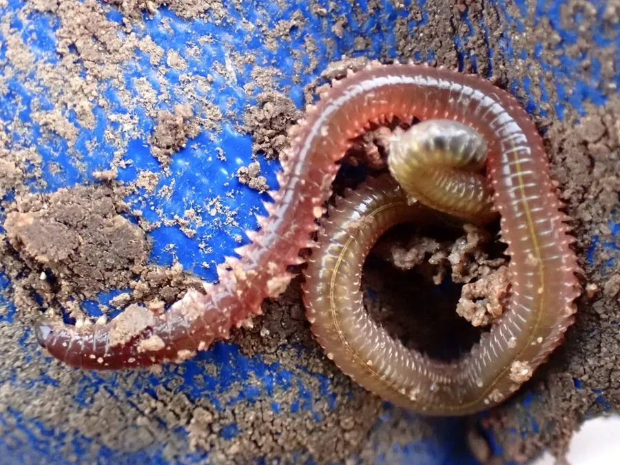

其他无脊椎动物 · 动物界
双齿围沙蚕 Perinereis aibuhitensis

中国沿海滩涂常见的大型沙蚕，疣足发达、耐低氧，是钓鱼和养殖的重要经济饵料，也可用于环境监测。
- 分类
- 门环节动物门纲多毛纲目叶须虫目科沙蚕科属围沙蚕属
- 栖息环境
- 潮间带泥滩和河口，钻洞而居，耐低氧
- 地理分布
- 中国沿海滩涂，尤其是黄海、渤海和东海沿岸
- 保护级别
- 暂无评估；采捕需控制强度
物种志
双齿围沙蚕体长可达 20–30 cm，身体细长分节，每节两侧有一对发达的疣足，疣足上带刚毛，头部有触手和触须，吻端有两枚大颚，因此称双齿围沙蚕。体色青绿、红褐或黄褐色，随环境变化。
它生活在中国沿海的潮间带泥滩和河口，钻洞而居，耐低氧和污染，取食泥沙中的有机碎屑、藻类和小型动物。双齿围沙蚕是重要的经济多毛类，被大量采集作为钓鱼活饵和对虾养殖的饵料，部分产区还开展人工养殖。它在滩涂生态中能促进有机质分解、改善底质，也可作为环境监测的指示生物；过度采挖会破坏滩涂底质，采捕时应控制强度。在滩涂生态修复中，它也能帮助改善底质。
形态与习性
- 食性取食泥沙中的有机碎屑、藻类和小型动物
- 体长可达 20–30 cm
- 形态疣足发达，吻端有两枚大颚
- 经济钓鱼活饵和对虾养殖饵料
- 生态促进有机质分解，可作环境指示生物
- 分布中国沿海滩涂
趣味知识
- 双齿围沙蚕的名字来自它吻端的两枚大颚。
- 它是钓鱼常用的活饵，也是对虾养殖中的重要饵料。
- 采挖沙蚕会翻动滩涂底质，过度采捕会影响滩涂生态。